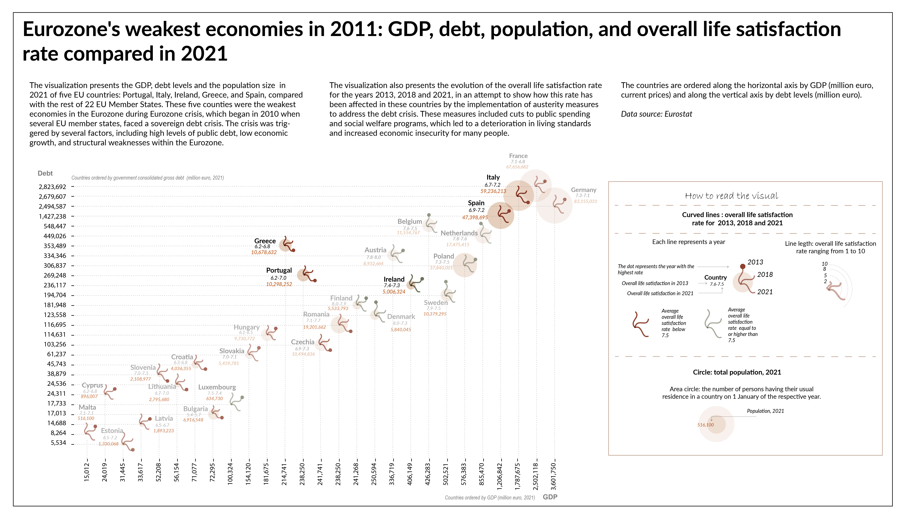

Data visualization with Adobe Illustrator
I crafted various graphs using Adobe Illustrator for diverse reports, effectively conveying key findings and insights. Below you will find a selection of these graphs.


The visual below, created as the final project using Adobe Illustrator for my course 'Data Visualization and Information Design: Create a Visual Model' on Domestika, explores the performance of the EU's weakest economies in 2011 compared to 2021. It aims to provide a comprehensive understanding of how these economies have evolved over the course of a decade. The data were collected in excel and the first draft graph was produced with Raw graphs. The final vizual was prepared in Adobe Illustrator.
